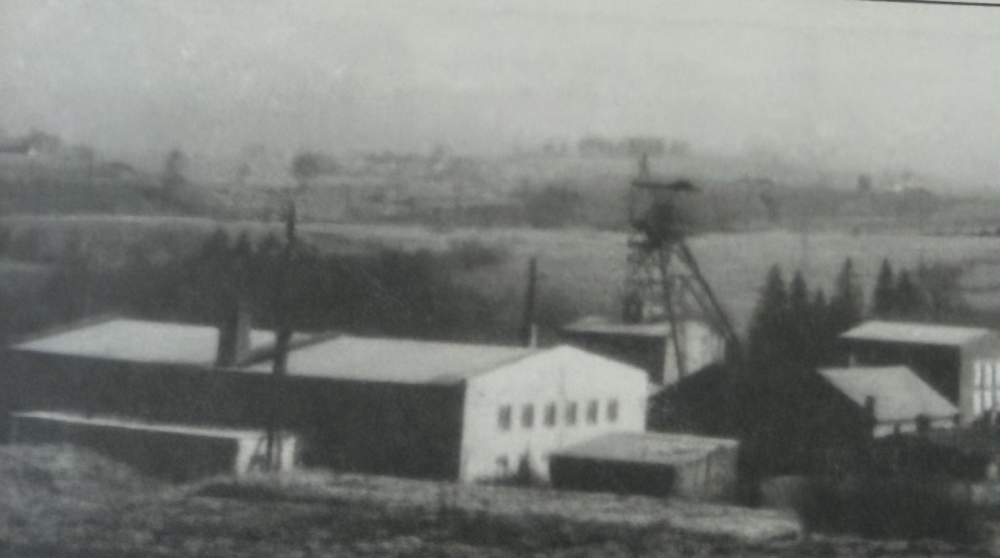
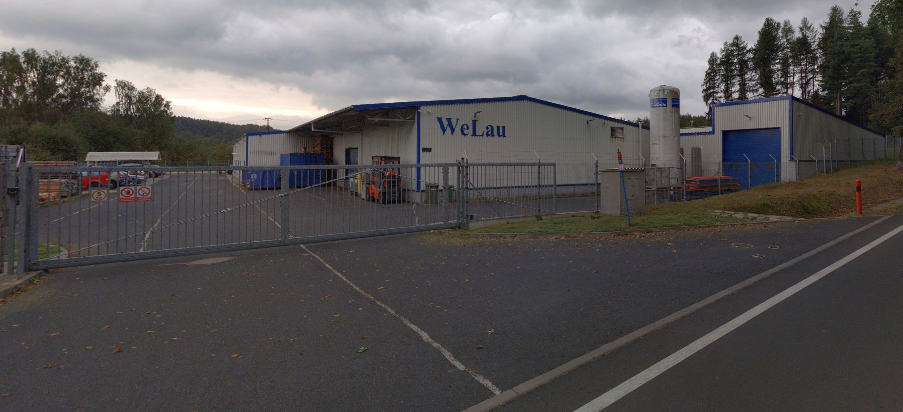
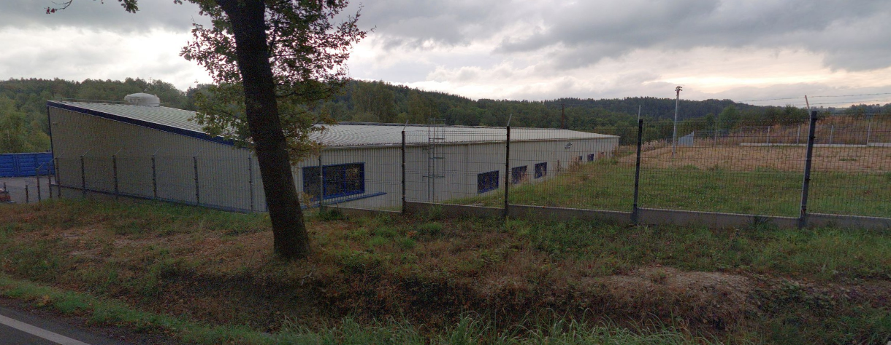
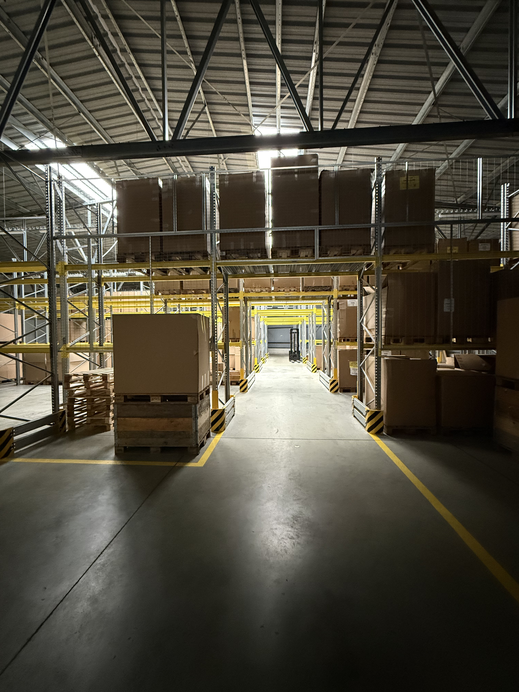
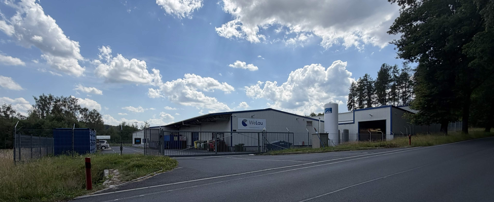

O nás
WeLau
Jsme česká výrobní společnost specializovaná na komínové a kouřovodové systémy z nerezové oceli a odolných plášťových komponentů. Od svého založení v prosinci 2005 se zaměřujeme na výrobu spolehlivých, funkčních a bezpečných systémů pro instalaci v interiéru i exteriéru budov.
Naše produkce je orientována na precizní zpracování, stabilní kvalitu a dlouhodobou odolnost. Všechny naše výrobky exportujeme do Německa, kde se osvědčují v náročných provozních podmínkách.
Naše klíčové milníky





Profil firmy
WeLau s.r.o.
- Obchodní jméno: WeLau s.r.o.
- Sídlo: Hasičská 1021, 357 31 Horní Slavkov, Česká Republika
- IČO: 26402017
- Výrobní areál: 3 500 m²
- Zaměření: Výroba komínových a kouřovodových systémů